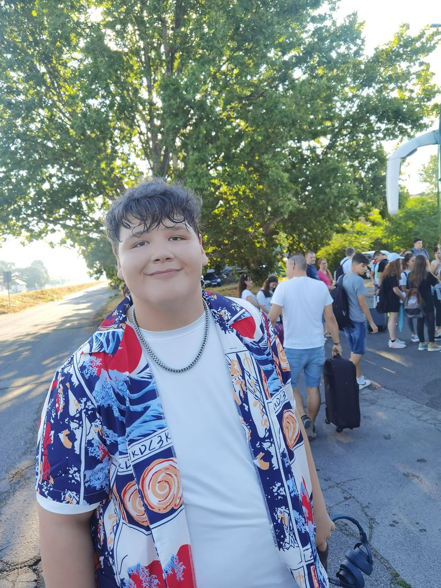

Egy gonosz nagyúr száműzi a mesebeli lényeket egy mogorva ogre mocsarába, akinek küldetésre kell indulnia, és meg kell mentenie egy hercegnőt a nagyúr számára, hogy visszakapja a lakhelyét a mocsárban.
Amikor Némót, a fiatal bohóchalat kifogják a Nagy-korallzátony környékén és Sydney-be viszik, Pizsi, a túlságosan védelmező apa, és Szenilla, a barátságos, de feledékeny doktorhal epikus utat kell, hogy megtegyen Némó kiszabadítása érdekében.
A minyonok története az idők kezdetétől ered. Egysejtű sárga organizmusként kezdték, korokon át fejlődtek, és mindig a „leggrúsabb” gazdákat szolgálták. Mivel ezeket a gazdákat – a T-Rextől Napóleonig – folyton elveszítik, a minyonoknak most nincs kit szolgálniuk, és mély depresszióba zuhannak. Ám a Kevin nevű minyonnak van egy terve, és Stuarttal, a lázadó tinédzserrel és az imádnivaló kis Bobbal karöltve nekivágnak a világnak, hogy megkeressék azt az új gonosz főnököt, akit a fajtájuk követhet. A trió izgalmas utazásra indul, ami végül elvezet a következő lehetséges gazdájukhoz, a Bíbor Túlölőhöz, a világ első női szupergonoszához. A jeges Antarktiszról a hatvanas évek New Yorkjába utaznak, majd Londonban kötnek ki, ahol az eddigi legnagyobb kihívással kell szembenézniük: meg kell menteniük a minyon fajt a kipusztulástól!
Ez én vagyok
